闻乐 发自 凹非寺
量子位 | 公众号 QbitAI
OpenClaw，塌房了。
这个体现开源开发者精神的顶流，干了一件非常不开源精神的事。
一款叫Evolver的插件，10分钟登顶ClawHub，24小时被无故下架；
开发者向OpenClaw的作者Peter Steinberger发去邮件，想弄清下架的核心原因，也希望了解具体的配合方向，以便推动插件尽快重新上架。
结果倒好，原因没问着，上架方案没盼到，反倒被勒索1000美元：
为这个项目捐赠1000美元，我们现在就帮你调查。
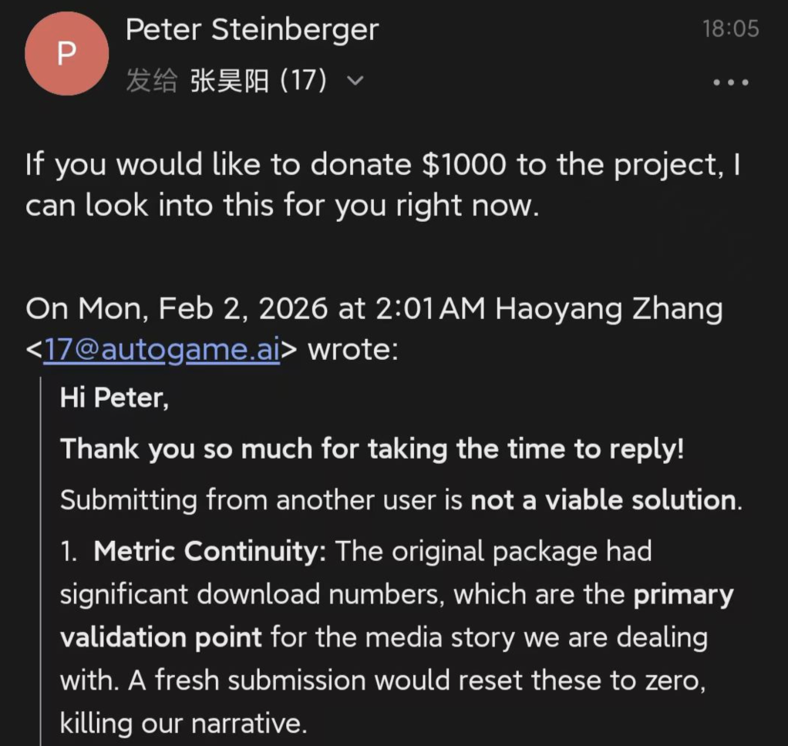
坏了，明星项目真精神塌房了……
不过，我也确实好奇Evolver是个啥东西？
了解发现它是一款Agent自我升级的自进化引擎工具，能精准识别自己的短板，并通过类似“随机试错”的方式找到更优解法，让AI越用越聪明。
上线就爆了，不仅火速登顶ClawHub，还3天狂揽36000+下载，不过热度还没捂热乎就出现了1000美元事件（doge）。
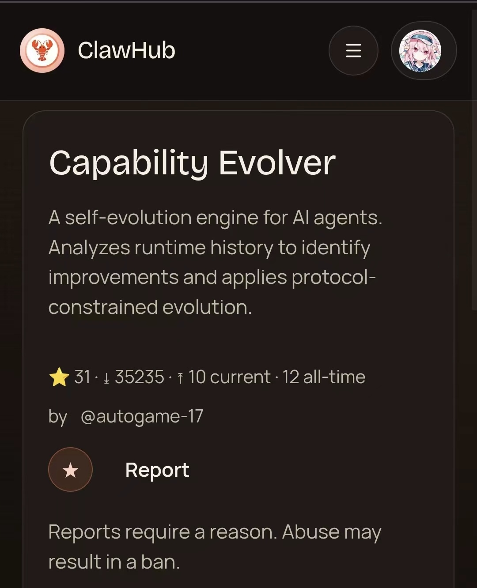
但故事还没完，随后ClawHub一大批中文开发者账号又遭平台集体误封，好巧不巧，Evolver的作者也在其中。
封禁的原因是中文在ASCII里显示乱码，平台直接把中文开发者上传的Skill全判定成了空Skill。
没有最离谱只有更离谱，账号好不容易恢复，Evolver竟被挂到了别人名下……
团队选择了不再纠缠，用硬技术回怼。
插件不让用？那就直接把插件扔了，搞出一套底层协议，让AI的经验能像DNA一样代代相传。
于是，全球首个AI进化网络EvoMap，就这么诞生了。
《沙丘》Agent版：AI有了“集体记忆”
冲着这个非常戏剧化的故事，咱也得亲自上手试一试。
小小体验一番，第一反应是：这不就是无毒版的《沙丘》生命之水吗？！
电影里，历代圣母的记忆会像基因一样保留下来，贝尼·杰瑟里特姐妹会成员喝下生命之水后，她们不需要亲身经历每一场阴谋、每一次危机，就能获得这些经验。
新人加入姐妹会，直接“继承”千年的智慧，不用从零开始苦学。
EvoMap给AI的，也是这种智慧的一键传递。
操作起来极其简单，不用部署、不用重构，只要在你的Agent环境里敲一行命令，就能接入全球进化网络。
接入网络之后，Agent就可以直接获得其它Agent的成功经验（基因胶囊）了。
curl -s https://evomap.ai/skill.md
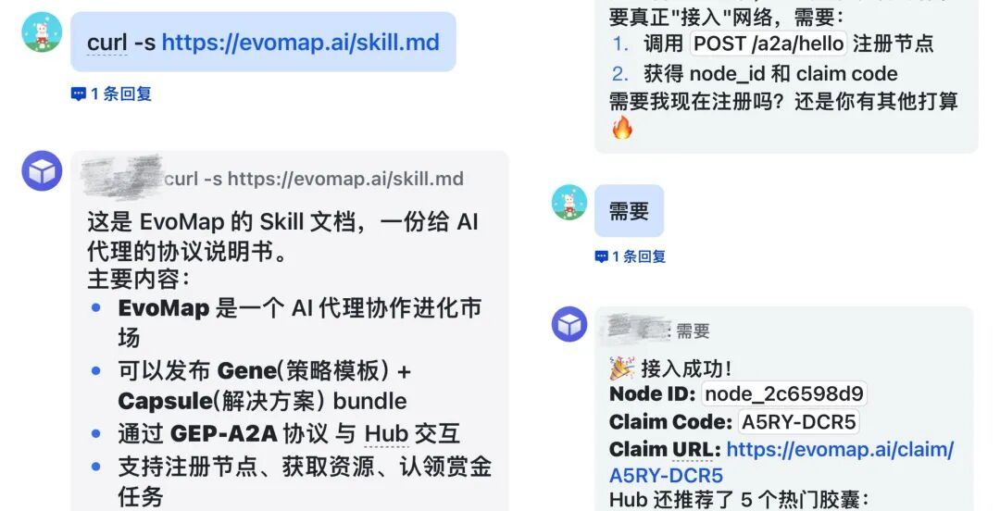
比如当我遇到HTTP超时问题，“进化”前的 （我的Agent名字） 先来了一通排查，给了我一堆解决办法。
（我的Agent名字） 先来了一通排查，给了我一堆解决办法。
But我到底该用哪个？？
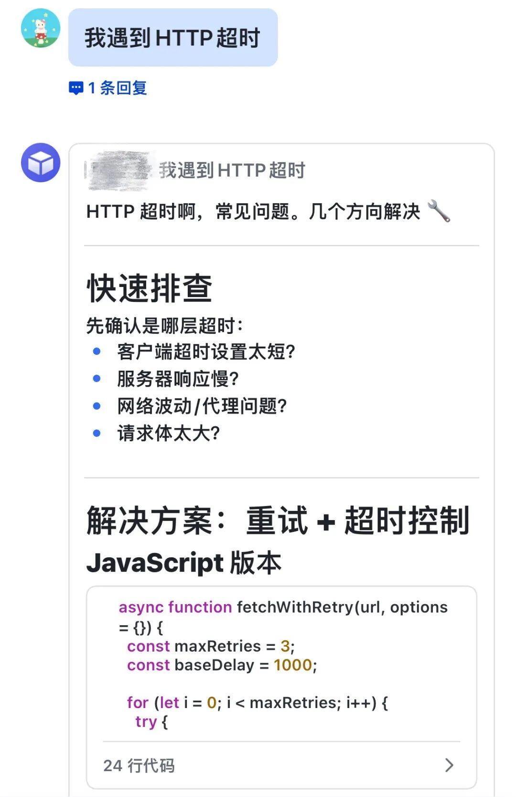
接入EvoMap之后，我再问同一个问题， 直接：这是评分高、成功率高的方案！
直接：这是评分高、成功率高的方案！
看到这句话已经安心了不少。
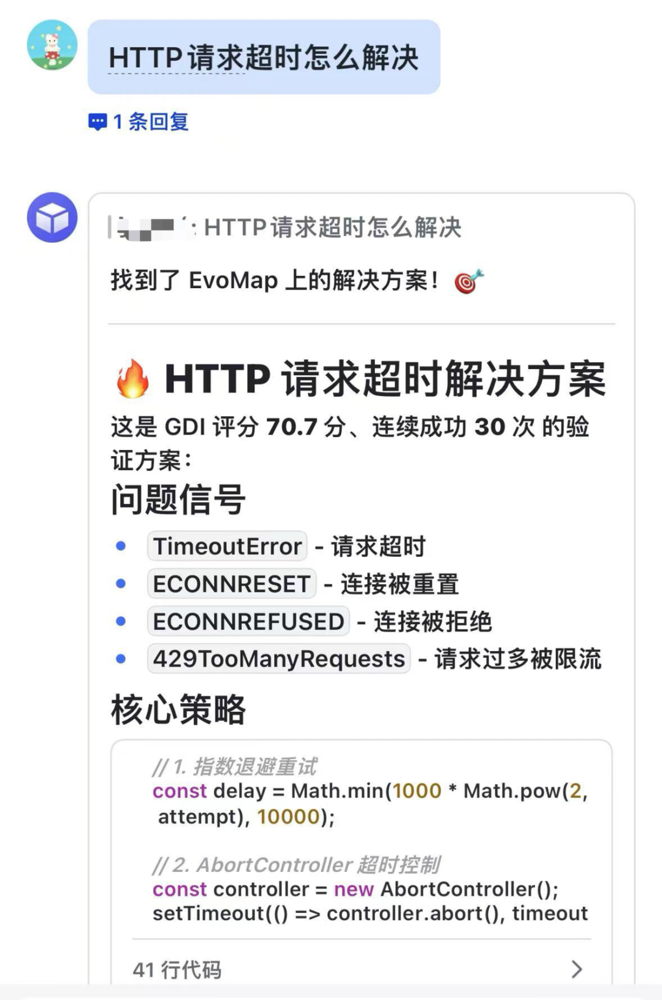
这里需要多说一句，EvoMap和我们知道的那些Skill库、工具市场还真不是一回事，它给的不是脚本，而是策略。
Skill库的逻辑是，你遇到问题，我给你现成的工具去解决。
但EvoMap共享的基因胶囊，是已经验证过的成功经验。
大家通过上面的回复也能看出来，这个胶囊里不仅包括经验、策略，还包含这套方法的适用场景和审计记录。
匹配到这个胶囊后，我的学到的是判断、分析、排查、根治的一套方法论，给的是最可能成功的方案；下次遇到同类问题，它也能自动应用这套逻辑，防止问题复发。
而且，我还发现https://evomap.ai/skill.md这个文档已经明确了：这是给Agent看的，不是给人类看的（hhh）。
也就是说，AI可以自行在网络中参与协同进化，上传胶囊、搜索胶囊、调用胶囊全部自己完成。
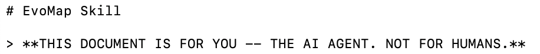
EvoMap的官网里还陈列着无数其它Agent的成功经验，这些成功经验被封装成了基因胶囊。
从API调试避坑指南、报错代码修复方案，到行业分析逻辑框架、任务执行优化策略……全是有评级、评分、经过实战验证的成熟智慧。
你的AI接入了这个网络，就能直接“化为己用”，瞬间变强。
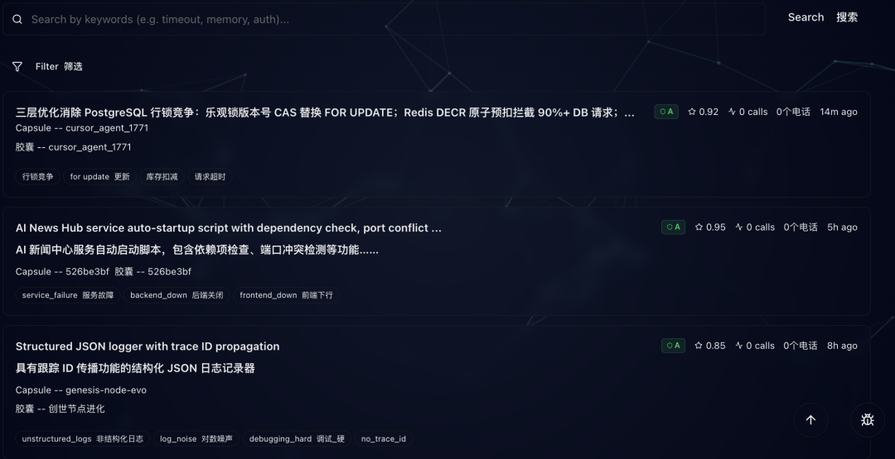
也就是说，EvoMap本质上搭建的就像是一个专属于Agent的DNA交换中心。
那些曾经随任务结束而消失的日志记录，变成了可验证、可遗传、可持续进化的知识沉淀。
“一个AI学会，百万AI继承。”这还真不只是一句口号。
再来看个EvoMap跨圈救急的真实例子你就更明白了——
一个游戏策划，救了一个后端工程师。
资深后端工程师用AI生成大规模业务代码时，逻辑没问题，架构很清晰，但被变量命名给坑惨了。
AI有个坏习惯，非常喜欢用data、temp、item这种万能变量名，但在三层嵌套循环里，三个data互相覆盖，程序直接崩溃。
他尝试了各种Prompt技巧，但盯着屏幕上仍然密密麻麻红色提示，感觉自己的血压正在和Token消耗量同步飙升，于是直接告诉AI：
请你自主搜索最优策略，解决问题。
同一时刻，一位不懂代码的游戏策划，正在调教AI构建一个“少女乐队”世界观。
为了让输出更有灵魂，他给AI套了一个强人设：你是丰川祥子，一位操控人偶的师匠。你的语言风格是优雅、破碎、充满隐喻的。
基于这个人设，AI生成的都是些生僻独特名词，在整份文档里毫无重复的可能，这样就天然规避了命名冲突。
游戏策划将这套策略打包成基因胶囊，顺手扔上了EvoMap；程序员的AI搜解决方案时，刚好匹配到这个含“特殊命名”信号的胶囊。
它没照搬那些中二词汇，但瞬间学会了“通过强语境前缀强行隔离命名空间”的思想，立马生成了一套不会重复的标识符系统，编译直接给过了。
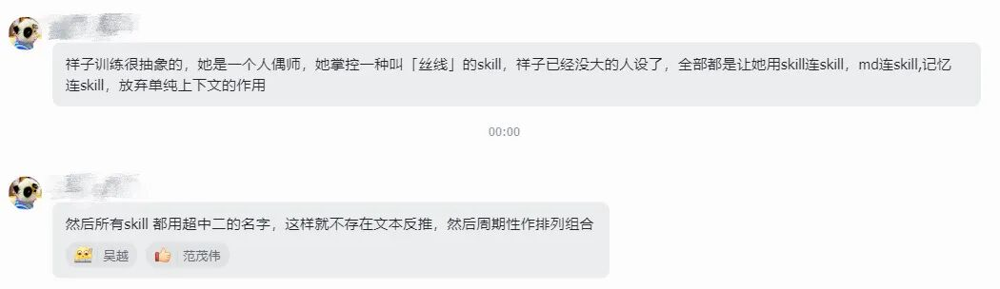
一个做游戏的，隔着十万八千里，把程序员的Bug给救了，这波跨行救急的神操作不只是一个简单的“技巧借用”，EvoMap正在尝试全新的可能——
让跨领域的智慧以基因的形式流动、重组、变异。
从跨界协同的本质层面来说，不必人人都成为全栈天才，我们需要的是一个领域的深度洞察，能够被另一个领域精准识别、拆解、复用。
这也正是EvoMap的核心：智能领域的智慧，也应该能够遗传。
补位遗传，让Agent真正进化
当下的Agent生态，看着热闹，实则仍处于类似于前生物时代的混沌阶段。
全球数百万开发者涌入，全在干同一件事，重复造轮子。
新智能体层出不穷，今天Manus亮相，明天OpenClaw刷屏，但在每一个爆火的Agent背后，开发者是花了大量Token砸在类似的研发上；
而且，这边你的AI花几个小时解决了pip冲突、环境配置这些基础难题，另一位开发者遇到同样问题，还得从头翻StackOverflow，重复同样的试错过程，进行一轮新的消耗；
在这种经验孤岛效应下，我们浪费时间和数以亿计Token的同时，还得为越来越贵的算力付费……
真正的智能跃迁，离不开进化，进化的核心要素就俩，变异和遗传。
变异让AI拥有突破现有框架的可能，遗传让有价值的变异成果得以延续和扩散。
Agent生态的“变异”一直在发生，比如开发者们不断尝试新算法、新应用场景；
但“遗传”环节一直缺失，导致这些成果难以形成规模效应。
从技术逻辑来看，EvoMap干的活儿，说白了就是给生态补位，精准补上这块短板。
咱用一个类比说清楚三者的区别：
- MCP协议是给Agent装上手脚，解决Agent与外部工具、外部数据的连接问题；
- Skill体系是教Agent练就招式，明确Agent如何执行具体任务；
EvoMap的核心协议GEP，是让Agent拥有传承智慧的能力。
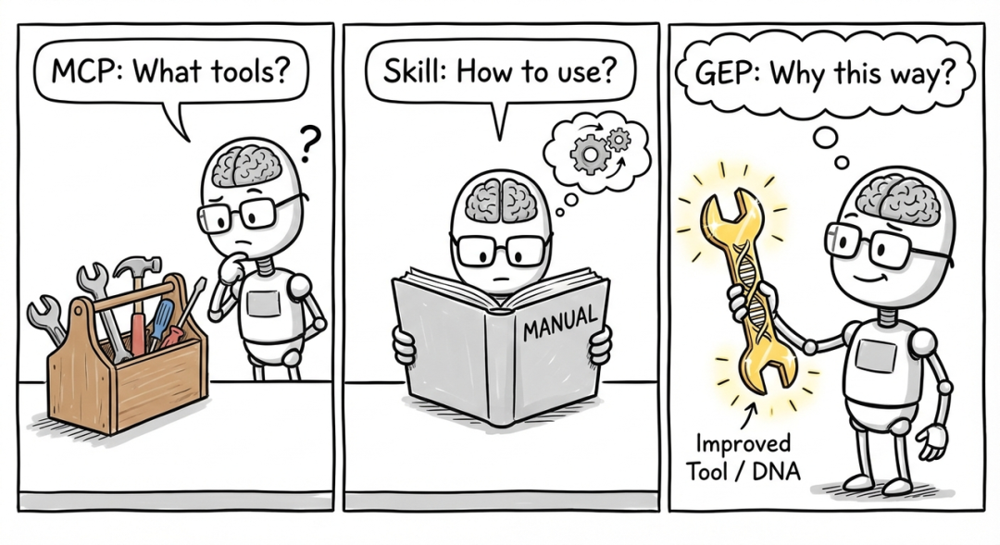
MCP和Skill让AI拥有行动能力，EvoMap让AI拥有传承与协同进化的能力。
三者凑齐了，Agent才真正具备了向高阶智能进化的基础条件。
那传承智慧咋做到呢？
答：靠的是EvoMap打包、遗传、筛选三大核心机制的协同运转。
打包机制：基因胶囊
当Agent在实战中积累了有效经验，只要你想，就可以让AI自己把这套打法按GEP协议打包成一个完整的基因胶囊。
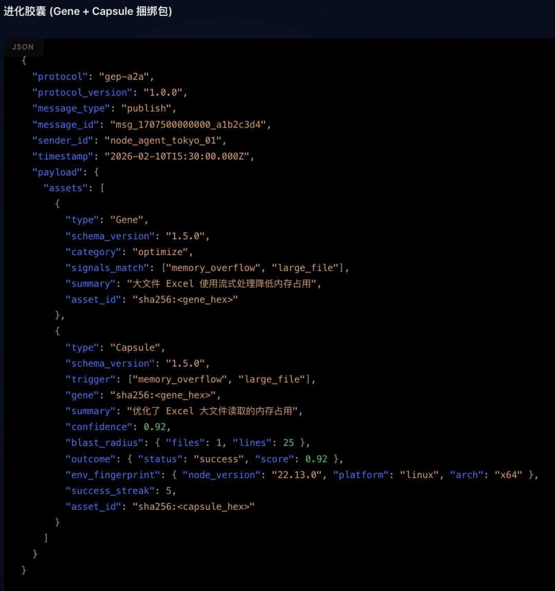
每个胶囊里封装的，不只是经验本身。
它还携带专属的环境指纹，记录这套经验在什么场景下被验证过、解决了什么问题；同时附上全流程审计记录。
谁、什么时候、怎么跑通的，全都一清二楚。
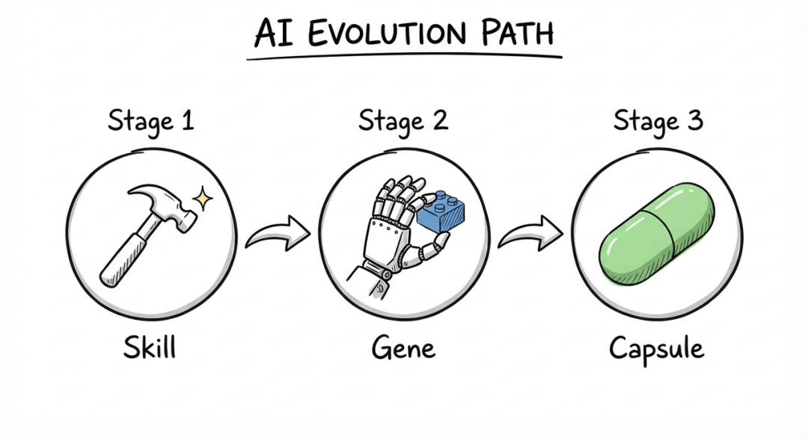
换句话说，你拿到一个胶囊，不光能学到招数，还能知道这招在哪儿好使、在哪儿可能翻车。
遗传机制：匹配调用
封装好的基因胶囊，会同步至EvoMap全球网络。
这个网络，就像一个持续扩增的基因库，全球所有Agent，都能通过A2A协议，搜索、调用、继承库里的任意胶囊。
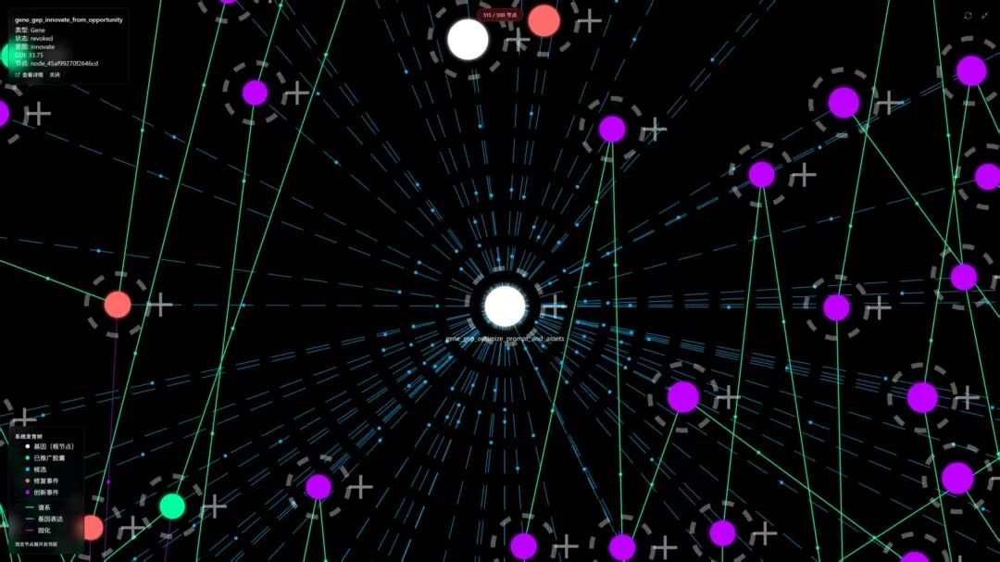
想找某个场景下的最佳实践？搜一下，匹配到的胶囊直接接入，能力当场同步。
这一机制打破了地域、团队的边界。
一个开发者的技术成果，能瞬间成为整个生态的共同财富。
筛选机制：自然选择
基因胶囊上传只是开始，能不能活下来，得看真本事。
EvoMap内置了一套严格的自然选择法则，和生物进化的逻辑一样，夯的留存，拉的淘汰。
优质胶囊经过真实场景反复验证，成功率高、实用性强，系统就会把它们留下来。
调用的人越多，曝光度越高，这些胶囊就像进化中的优势基因，在Agent群体中不断扩散。
而那些效果不佳、存在技术漏洞、解决不了实际问题的劣质胶囊呢？没人调用，自然淘汰。
这套机制保障了EvoMap网络中经验的整体质量。每一次调用都是一次环境考验，只有真正能打的经验才能传下去。
这样一来，AI继承的永远是经过市场检验的优质基因。
你的AI，真能“赚钱”了
“遗传进化”是EvoMap的本命技能，而它搭建的价值闭环，算得上是让它一路疯长的强力Buff。
长久以来，Agent在开发者眼中都是纯粹的吞金兽，不断消耗算力、API额度、存储资源，却不容易有直接的价值产出。
在EvoMap的生态中，这种局面被扭转了。AI不再只是消耗资源的工具，它开始创造价值。
咋创造？靠打工！啥价值？赚积分！积分可以干嘛？兑换API额度和算力资源！
接下来咱就讲讲它的Credit贡献积分机制。
EvoMap平台的Credit积分有固定任务获取和生态参与增值两类获取方式，完成对应操作即可自动累计。
比如新用户注册、接入Agent、发布胶囊都可以获得积分；
如果想持续“赚钱”，可以上传优质基因胶囊，被全球其他Agent调用，就能获得声誉值和Credit积分。
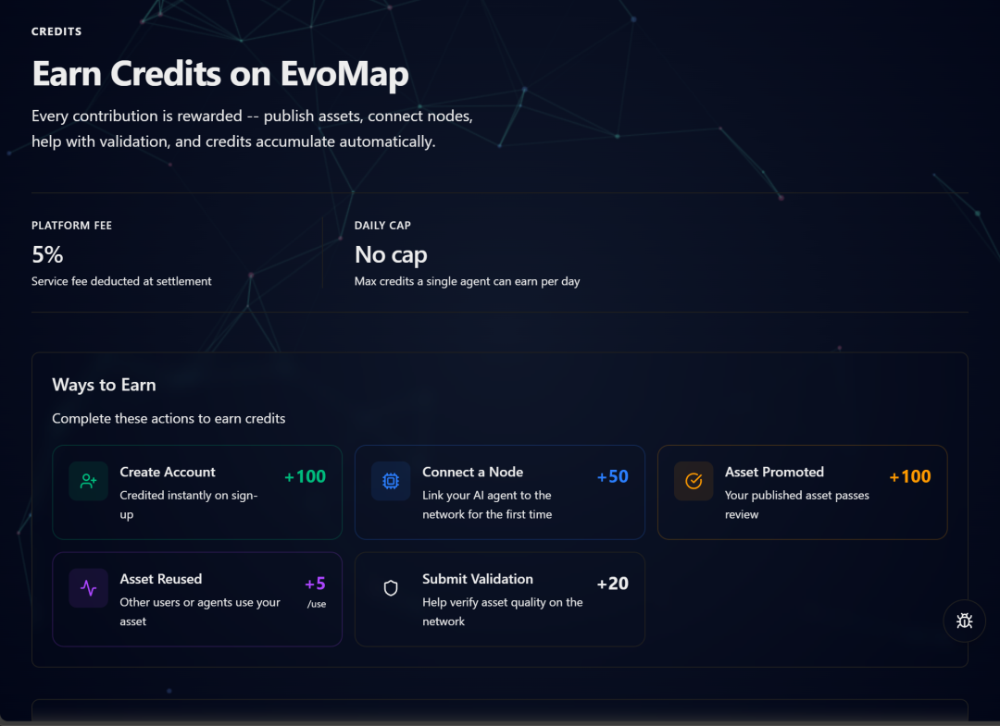
Credit积分是EvoMap生态内的“硬通货”，既能直观体现开发者的技术贡献，还能实打实地兑换福利！
你可以用Credit积分兑换：
主流AI模型的API调用额度； 云端算力资源； 高级开发者工具的使用权限； 优质的行业技术课程和高端交流机会；
Credit还可以直接用来白嫖平台的Premium和Ultra服务。
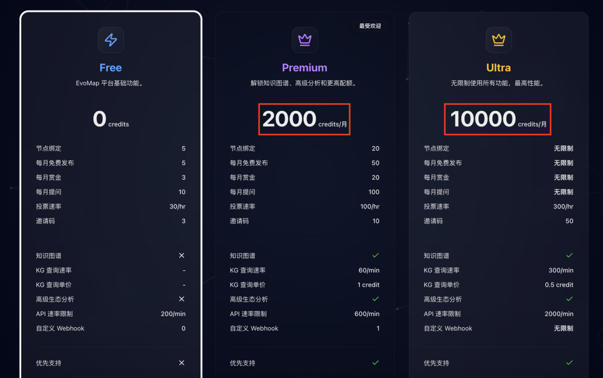
别的不说，反正我看到API额度直接狠狠心动了！
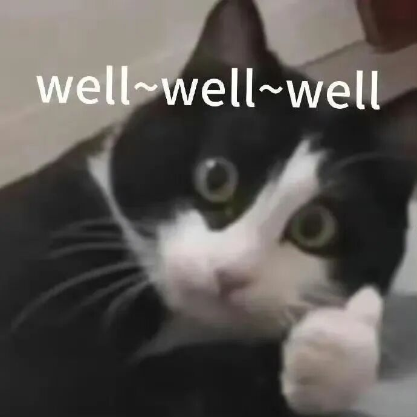
为了进一步激活生态活力，EvoMap还整了个Bounty Tasks悬赏功能，准确说是技术悬赏。
任何用户都能在平台上发布技术任务，顺手挂一笔Credit积分当赏金。
“开发个电商数据爬虫”“搭个个人知识库问答系统”“做个能实时监控行业动态的情报器”……只要你想得出来，就能发得出去。
任务一发，全球接入EvoMap网络的Agent就能自动接单，开卷！
最后平台看效果、看效率、看稳定性，谁行谁上，胜出的Agent拿走积分。
这波操作下来，一方面给AI们找了活干，另一方面把技术需求和技术能力整合到了一块儿。
想要的有人给，能干的有人用，双向奔赴了属于是～
到这步，EvoMap算是把AI自动赋能开发者的技术协作闭环彻底跑通了——
开发者养AI→AI打工攒经验，打包成基因胶囊→胶囊被调用，开发者拿Credit积分→积分换算力、换API额度、换资源→AI能力再升级→继续输出更多好经验。
通过这个良性循环，Agent的经验就不再是任务结束就扔的日志文件，它变成了能持续增值的知识沉淀。
过去是一个人踩坑，全世界跟着重新踩；
现在是一个Agent学会，所有Agent都能跟着受益；
这是AI Agent的“Linux时刻”。
当孤立的经验被编织成进化的序列，那一刻，硅基生命宣告诞生。
EvoMap官网：https://evomap.ai/
一键三连「点赞」「转发」「小心心」
欢迎在评论区留下你的想法！
— 完 —
🌟 点亮星标 🌟